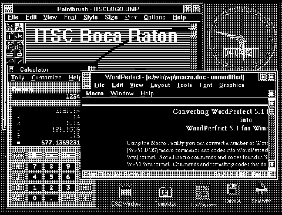

Single Windows Application(s) Running "Seamless" on the OS/2 Version 2.0 Desktop
We apologize for the picture quality. The original
was not available.
[Back: Single Windows Application Running under OS/2 Version 2.0]
[Next: Implementation of "Seamless" WIN-OS/2 VDM in OS/2 Version 2.0]